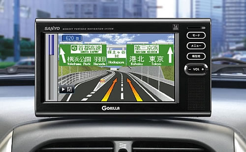

El GPS o Sistema de Posicionament Global és un objecte que permet a una persona determinar en tot el món la posició d'un objecte, una persona o un vehicle, amb la precisió de normalment metres. El sistema va ser desarrollat, implementat i utilitzat al principi pel Depertament de Defensa dels Estats Units.
El GPS o Sistema de Posicionament Global és un objecte que permet a una persona determinar en tot el món la posició d'un objecte, una persona o un vehicle, amb la precisió de normalment metres. El sistema va ser desarrollat, implementat i utilitzat al principi pel Depertament de Defensa dels Estats Units.
La idea del GPS va surgir per primera vegada entre els militars el 1973. El primer satèl·lit dels 24, NAVSTAR 1, va ser llençat el 1978.
El sistema GPS està constituit per 24 satèl·lits i utilitza la trileteració per determinar en tot el globus terraqui.
El sistema orbita a 20.200 km d'altura amb trajectories sincronitzades per cubrir tota la superfície de la Terra.
Funcionament
Per calcular la teva posició s'han d'utilitzar com a mínim 4 satèl·lits, aquests satèl·lits utilitzen rellotges atòmics (que tenen una exactitud de un billonèssim de segon). Aquests satèl·lits reben la teva posició amb forma de longitud i latitud, després la senyal torna al teu GPS del mòbil o del fabricant que sigui al teu cotxe i busca el punt en el mapa que hi te integrat, així sap on estàs.
Funcions i Prestacions
 Encara que la tecnologia del GPS va ser pensada i desarrollada principalment amb propòsits militars, ara tothom o gairabé tothom la pot fer servir gràcies als aparells que pots posar al teu cotxe i ja et venen integrats a tots els smartphones. Gràcies al GPS pots anar d'un punt a un altre del país sense perdre't, per que el GPS t'indica la posició i la ruta a seguir.